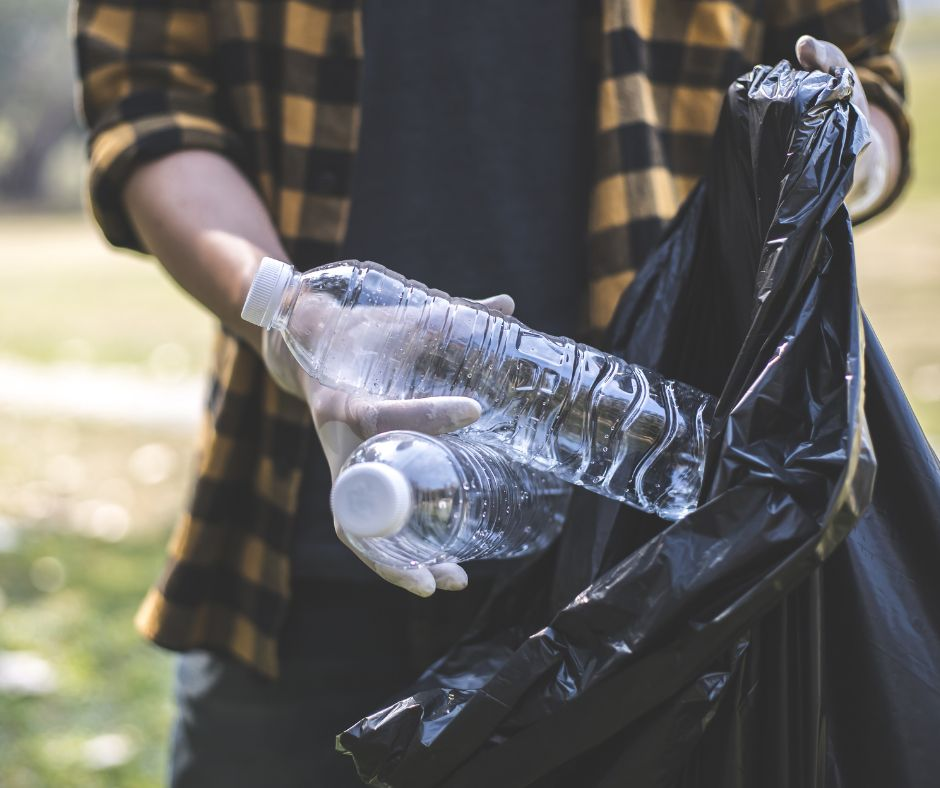

Visão
Como a alta velocidade de lançamentos de produtos e com a tecnologia que não para de inovar, vem se acelerando o descarte de lixo e total desequilíbrio na natureza, com imensa quantidade de material descartado não reaproveitadas e lançadas no mercado.
Diante desses impactos e dificuldades, algumas possibilidades vêm surgindo no setor de resíduos, como oportunidades de negócios com potencial econômico, ambiental e social.
Relatório do Instituto de Pesquisa Econômica Aplicada (Ipea) divulgado em maio de 2022, no Ministério do Meio Ambiente, informa que o país perde R$ 8 bilhões por ano quando deixa de reciclar resíduo, encaminhado para aterros e lixões, que pode ser aproveitado.
Diante desse mar azul de oportunidades que surge a Reciclagem Ideal. No propósito de reciclar e colocar novamente no mercado o material que poderia ir para um aterro sanitário e passar anos e anos para se decompor.
Coleta
Coletamos em todo Distrito Federal. Temos veículo especializado para armazenamento e transporte. Profissionais gabaritados e preparados para o serviço.
Parceiros
Parceria com grandes empresas. Todo material que entra na Reciclagem Ideal tem um projeto de devolução para o mercado, através de nossos parceiros nos ramos de minério, plástico e construção civil.
Beneficícios
Quanto mais reciclar, mais diminuirá os custos com limpeza urbana, além de evitar a poluição reduzindo as emissões de gases de efeito estufa que provocam a mudança climática global, mantendo o Meio Ambiente sustentável para as gerações futuras.
- Diminuição da poluição do ar, água e solo
- Economia de energia
- Geração de empregos e renda
- Diminuição da poluição urbana
Materiais
Ferro fundido
No Brasil, quase 9 milhões de toneladas de sucata ferrosa são reaproveitadas na economia. E aproximadamente 25,9% da matéria-prima utilizada na produção da indústria siderúrgica é proveniente da cadeia de reciclagem.
Sucata
O Brasil ainda está longe de ocupar um papel de liderança nessa atividade econômica. O país líder em reciclagem da sucata ferrosa é a Turquia, onde compõe 80,9% dos insumos da indústria siderúrgica.
Maquinário
Usamos caminhão e tratores para o manuseio do material. Equipamentos para recuperação de material ferroso.